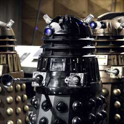

The Daleks
The Daleks are a fictional extraterrestrial race of mutants principally portrayed in the British science fiction television programme Doctor Who. The Daleks were conceived by science-fiction writer Terry Nation and first appeared in the 1963 Doctor Who serial The Daleks, in the shells designed by Raymond Cusick.
Within the programme narrative, Daleks are an extraterrestrial race of cyborgs created by the scientist Davros during the final years of a thousand-year war against the Thals. He genetically modified his race (known as the Kaleds), and integrated them with a tank-like, robotic, mechanical shell. His final modification was to remove their ability to feel pity, compassion, or remorse. The Daleks soon came to view themselves as the supreme race in the universe and began a conquest of universal domination and extermination. Various storylines portray them as having had every emotion removed except hate, leaving them with a desire to purge the Universe of all non-Dalek life. Collectively they are the greatest enemies of the series' protagonist, the Time Lord known as the Doctor. During a conflict with the Time Lords, the Daleks were almost completely killed off. This took place off-screen between the 1996 television movie and the 2005 revived series, and was depicted in the 50th anniversary special "The Day of the Doctor". Their defeat was a plot point in several episodes. They are popularly known for their catchphrase "Exterminate!" and are a well-recognised reference in British popular culture.
Nicholas Briggs has provided the voice for the Daleks since the 2005 revival of Doctor Who.
|